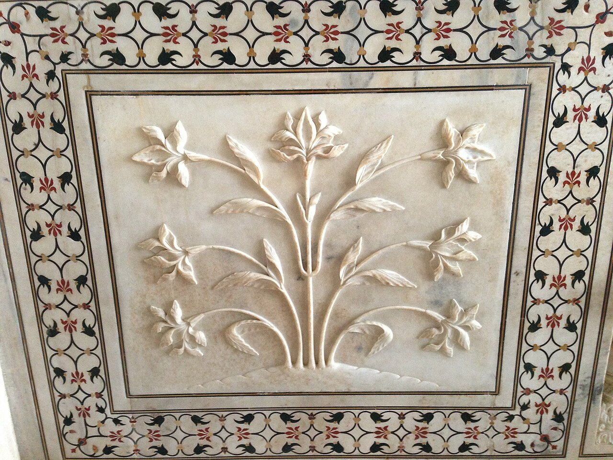

From the far end of the garden, the Taj Mahal can look almost weightless. Up close, the scale returns: long paths, a reflecting channel, and fine details that reward a slower pace.
A monument made for remembrance
Commissioned by the Mughal emperor Shah Jahan as a mausoleum for Mumtaz Mahal, the Taj Mahal is the centerpiece of a larger complex beside the Yamuna River. Its white marble, gardens, mosque, and guest house belong to one carefully composed place. Read the official Taj Mahal history alongside the UNESCO World Heritage description for more context.
The symmetry is striking from a distance. The closer view is quieter: flowers and geometric patterns inlaid in stone, light moving over a surface that never seems quite the same twice.
Start with the visit details
The official visitor information currently lists entry from 30 minutes before sunrise until 30 minutes before sunset and notes that the site is closed on Fridays. Hours, access rules, and ticket arrangements can change, so check again close to your visit and use the official ticketing page.
Agra can be hot and busy. Arrive with enough time for the entry process, keep water and sun protection handy, and leave a buffer for the route between your hotel, station, and gate. A ticket time is easier to enjoy when the rest of the day is not packed around it.
Let the detail slow you down
After the central view, take a moment with the carved borders and inlay work. Follow posted guidance, avoid touching decorated surfaces, and be considerate around people waiting for photographs. The garden is part of the monument’s design, not just the walk between viewpoints.

Official visitor information
- Taj Mahal official visiting hours
- Taj Mahal official ticket information
- UNESCO World Heritage Centre: Taj Mahal
Recheck current opening times, ticket details, and visitor rules before setting out.
Recommended apps for the best trip
These independent services are not Met partners. Check official visitor details and current availability before booking.
Google Maps
Compare routes across Agra and check the distance to your chosen entrance.
Uber
Check city ride options for station and hotel transfers where available.
IRCTC Rail Connect
Check Indian Railways schedules and ticket options for journeys to Agra.
Booking.com
Compare stays and verify the exact address and route to the monument.
Met
save your name and the memory in the “Taj Mahal” Guest Book with a handwritten-style note or photo, and connect with other great travelers along the path.